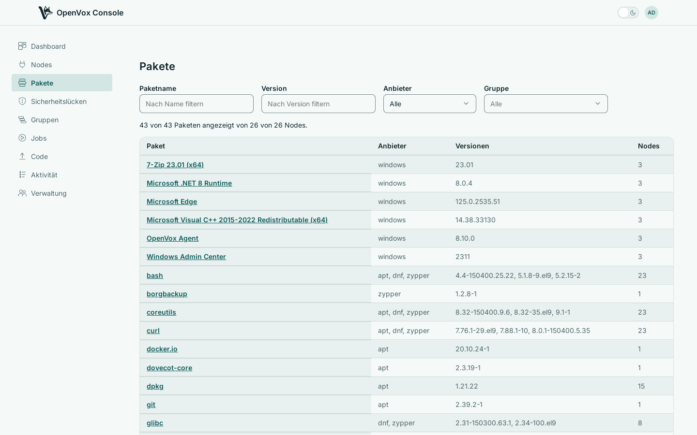
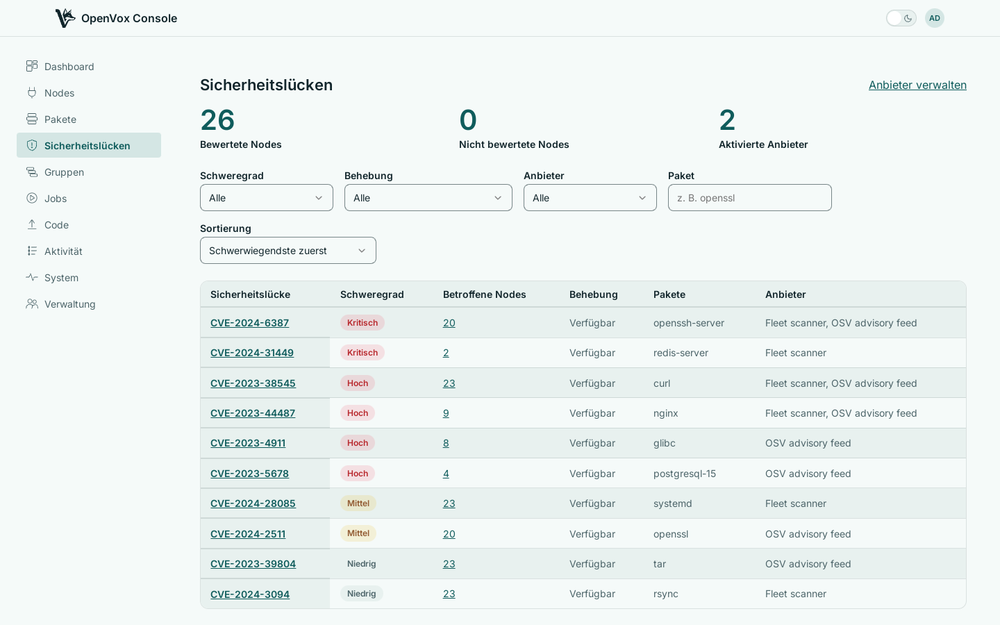

Jedes Paket in der gesamten Flotte und die veröffentlichten Advisories, die es betreffen – geprüft gegen das, was Ihre Nodes tatsächlich melden, nicht gegen das, was sie haben sollten.
Beantworten Sie „wer hat noch die alte Version“
Suchen Sie nach Paket, Version oder Anbieter und sehen Sie, welche Nodes was tragen, ohne sich auf einem davon anzumelden. Die Erfassung ist je Node zuschaltbar und die Konsole kann sie aus der Ferne einschalten – Sie müssen also nicht überall erfassen, um es irgendwo zu haben.

Befunde, quellenübergreifend zusammengeführt
Richten Sie die Konsole auf die Advisory-Quellen, denen Sie vertrauen. Befunde werden je Schwachstelle zusammengeführt, die höchste Schwere gewinnt, und die Seite nennt jede meldende Quelle – zwei Quellen, die sich widersprechen, sehen Sie also, statt dass es hinter Ihrem Rücken aufgelöst wird.
Jeder Befund führt die installierte Version mit, die behobene Version – sofern es eine gibt – und ob überhaupt eine Behebung existiert. Letzteres ist der Unterschied zwischen Arbeit, die Sie planen können, und Arbeit, die Sie nicht planen können.

Ein Node ohne Paketinventar kann nicht bewertet werden, und die Konsole sagt das, statt ihn als sauber zu zählen. „Nichts bekannt“ und „nie nachgesehen“ sind verschiedene Antworten und erscheinen auch verschieden.
OpenVox Console wird als zwei Container-Images ausgeliefert, bei jedem Push für amd64 und arm64 gebaut. SETUP.md führt durch ein echtes Deployment – openvoxserver, openvoxdb, Postgres und die Konsole – mit Anleitungen für Container und Pakete.